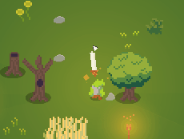
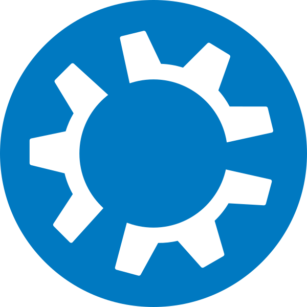
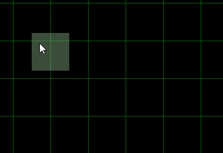
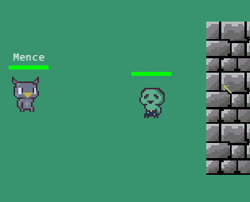

Bem-vindo(a)!
Meu nome é Mence, eu trabalho com desenvolvimento backend, devops e gamedev.

Eu descobri meu gosto por programação aos dez anos quando editava e tentava criar os meus próprios mapas personalizados de jogos como Warcraft III e Unreal Tournament.
Desde então, sempre estive envolvido com computadores e programação tentando colocar as minhas ideias e conceitos da minha mente para o digital.
Sempre me encontrará trabalhando em algum projeto pessoal, começando com a ideia ou arrumando os já existentes. Eu sempre estou trabalhando em novos projetos no tempo livre (geralmente jogos), gosto de automatizar tarefas manuais de servidores com bash no linux e pensar em novos feitiços para RPG. As ideias nunca de fluir.
Você pode checar meus projetos ou entrar em contato comigo se desejar!
Um pouco mais sobre mim
Minha primeira experiência com computador que eu me lembro foi em computadores com Windows 98 do laboratório de informática da minha escola, isso quando eu tinha 7 anos.Aos 9 anos meu pai comprou um computador com Windows XP onde eu lembrava de jogar Raptor e Pekka Kanna 2. Com este mesmo computador, eu conheci jogos como Generally, Half-Life, UT99 e Warcraft III.
Foi com este ultimo jogo que eu me adentrei no World Editor, o editor de mapas do programa, passei a pegar mapas que já foram criados como WarChasers e começar a alterar para entender o funcionamento até eu começar a fazer as minhas próprias versões deste modelo de mapa com mapas em branco. Passei a conhecer mais sobre triggers e etapas de desenvolvimento do jogo, mesmo que de forma offline e rudimentar.
Em 2007, aos 11 anos eu tive acesso a internet em casa via rádio pois eu morava na fazenda. Atrás do Battle.Net conheci amigos que mantenho contato até hoje e aprendi mais com desenvolvimento entrando em forums e comunidades.
Em algum momento da minha pré-adolescência eu estudei Visual Basic no curso de informática que eu frequentava na minha cidade, este foi meu "primeiro" contato com uma linguagem que não fosse uma linguagem de programação interna de um game.
Aos 16 anos eu entrei em um curso técnico de informática na minha cidade e conheci o Delphi, me maravilhei com o fato de que agora eu poderia criar meus próprios executáveis (.exe) e rapidamente começei a desenvolver vários tipos de projetos diferentes utilizando os componentes disponiveis na IDE.
Em 2013, aos 17 anos eu entrei em um emprego de programação para trabalhar com Delphi e Firebird para trabalhar no desenvolvimento e manutenção de sistema de contabilidade para escritórios.
Em 2014 eu entrei na faculdade de Engenharia de Computação, onde tive contato com matérias de robótica como Arduino e PIC, além de matérias como Computação Gráfica, Desenvolvimento Mobile, Redes e Estrutura de Dados.
Em 2022 eu estou no desenvolvimento backend em NodeJS mas também com um pouco de conhecimento em React.
Durante este periodo, já desenvolvi projetos freelancing em Python, automações para Raspberry PI e PHP.
Atualmente eu direciono meu foco no tempo livre para os estudos principalmente em meus projetos e gerenciamento em servidor Linux.
Projetos
| Boltcraft II (2022 - 2024) |
|---|
|  |
|
Um dos meus projetos mais recentes que estava trabalhando nos ultimos meses.
Boltcraft II conta para mim como um novo experimento, o estilo do uso da geração procedural pela primeira vez,
uso de névoa de guerra, minimapa e uso de armas equipavéis, faz desta versão do jogo superar a primeira tanto em
termos gráficos quanto em termos técnicos. A única coisa que eu planejei no comeco em implementar foi o
multiplayer Co-op, mas vai acabar ficando para uma próxima edição. xD Este jogo foi feito utilizando a versão 1.5 do Monolith que foi continuado da versão 1.34 do primeiro Boltcraft. O jogo está completo e totalmente gratuito para ser baixado e jogado pelo itch.io aqui! |
| Helper (2024 - Presente) |
|  |
|
Após alguns anos que estou 100% do meu tempo no Linux,
formatar e instalar na maquina (ainda mais se for testar outras distros) torna-se um processo
repetitivo ter que instalar as dependencias que eu utilizo durante o dia-a-dia. Então eu desenvolvi um pequeno grupo de scripts para realizarem a tarefa e de forma modular que eu possa configura-lo de maneiras diferentes dependendo da maquina que eu estou instalando (Trabalho ou Pessoal). Esta disponivel no GitHub. |
| Boltcraft (2021 - 2022) |
 |
|
O primeiro (e único até agora) jogo que publiquei no Steam, foi o primeiro jogo
que eu levei a sério para ir até o final com base na engine que eu havia acabo de fazer o Monolith 1.0. Embora ele não tenha um polimento adequado e não tenha tido sucesso no Steam, foi um projeto que na época eu havia me sentido extremamente orgulhoso pois era meu primeiro passo para meu caminho de Gamedev. O jogo conta com uma campanha completa, um modo de boss run e sandbox para testar habilidades. Está disponivel no Steam. |
| Realm Editor (2021 - Presente) |
|  |
|
Editor que desenvolvi para fazer mapas de forma dinâmica para ser lidos por jogos criados na Monolith
Game Engine. Foi a criação do Realm Editor que possibilitou Boltcraft I e II de existirem. Eu ainda estou dando manutenção periodica nele conforme novos projetos e novas versões do MGE surgem, para a geração de mapa acompanhar a geração dos jogos. Atualmente ele está disponivel no GitHub. Fato engraçado: Eu fui descobrir que existiam ferramentas como Tiled que tinham o mesmo propósito do software que eu havia desenvolvido depois de meses que conclui o Realm Editor (LOL), mas eu optei por não descontinuar o projeto e continuar usando ele para meus jogos :P. |
| Lamina (2021) |
|  |
|
Jogo que eu havia feito junto com o desenvolvimento do MGE, durante o desenvolvimento houve
varias versões e vários refactorings que aconteceram, as ideias do jogo se convergeram no Boltcraft I. O jogo esta rudimentar e conta apenas com um stage, mas esta completamente funcional. Esta disponivel no itch.io! |
| Monolith Game Engine (2019 - Presente) |
 |
|
Motor de jogo que eu desenvolvi ao longo do tempo para criar meus jogos. Feito puramente em C++,
utilizei as bibliotecas SFML e Boost para funcionar parte grafica e boa parte do código do projeto. Atualmente estou desenvolvendo a versao 2.0 onde estou incluindo multiplayer e uma redefinição grafica utilizando a biblioteca imGUI. Atualmente não tem nenhuma versão pública do projeto, mas pretendo liberar alguma versão futuramente. (y) |
| Python Game Engine Concept (2019) |
 |
|
Primeiro projeto standalone que eu fiz na area de gamedev, anteriormente so fazia projeto de faculdade
além do meu TCC e meus jogos eram basicamente mapas que eu criava no World Editor do Warcraft III. Utilizei pyglet uma variante do pygame para desenvolver este prototipo, infelizmente por falta de experiencia minha tanto na otimização como no game loop o jogo ficou demasiadamente lento mesmo sendo um jogo muito simples. Eu mantenho ele nos meus repositorios pelo fato da experiencia e para ver de onde eu comecei. O codigo fonte esta disponivel no GitHub. |
| Pitchula Photoreader (2017 - 2018) |
 |
|
Meu projeto de TCC convertido em uma mini-biblioteca que consiste em ler uma foto com um documento escrito,
transformar em texto e converter para áudio. Utilizei na época junto em uma Raspberry PI e uma camera para fazer meu projeto de faculdade. O código fonte está disponivel no GitHub. |